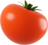
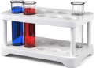
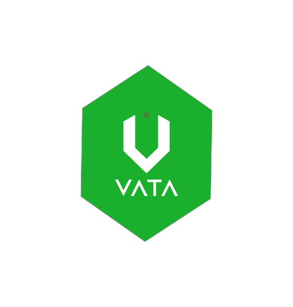

Le Dispositif De Conservation
Nouvelle Génération
Vata Rend Le Monde Plus Vert
Et L'économie Plus Saine.
Beaucoup Plus Qu'un Produit
C'est une entreprise composée de personnes qui ont à coeur l'avenir de notre planète.

Une Solution à
0 impact
Vata est un appareil frigorifique qui marche sans aucune source d'énergie.
Une Alternative Au
Frigo
Une meilleur conservation des fruits et légumes les plus fragiles.
La Solution Pour Les Producteurs

Un projet bâti au plus près des agriculteurs qui répond directement à leurs besoins.
Une Capacité D'adaptation

Une adaptabilité à d'autres domaines tels la conservation des médicaments etc.
Pas Seulement Un Dispositif à Froid
Vata Est Une Entreprise Engagée Dans Missions Principales.
1
Nous nous sommes engagés à réduire le gaspillage
alimentaire de 47% d'ici 2030. Notamment la perte de production qui touche 50% des cultures au niveau rural, mais aussi le gaspillage urbain.
2
En mettant à disposition des communes un Vata pour une parfaite conservation des récoltes en milieu rural, nous évitons de les vendre à perte par peur du putréfaction. Nous déployons également toutes les solutions possibles pour faciliter leur vente.
Réduire Notre Empreinte Carbone
3
Nous avons l'ambition de remplacer le réfrigérateur
traditionnel produisant des gaz réfrigérants qui contribuent au réchauffement climatique, pour rendre notre planète plus verte.
Créer Une Economie Agricole Equitable
Lutter Contre Le Gaspillage Alimentaire
"Nous Avons Découvert Un Millier D'Utilisations De Vata"
3

Star Madagascar .
Partenaire OSC De Vata
Nous Parrainons Ce Produit Durant Le Cadre De L'OSC Et Nous Utilisons Vata Pour Garder Nos Boissons Fraiches.
Masindray .
Village NutritionVata
Inviso Group .
Partenaire OSC De Vata
SMTP .
Partenaire OSC De Vata
Nos Producteurs Sont Heureux De L'utiliser Dans La Conservation Des Récoltes Mais Aussi Des Médicaments.
En Tant Que Parrain Du Projet Pendant L'OSC, Nous Aidons Vata à Améliorer Son Prototype Dans Nos Locaux .
En Tant Que Parrain Du Projet Pendant L'OSC, Nous Aidons Vata à Améliorer Son Prototype Dans Nos Locaux .
Manoa Rakotomiaranjato
Coach Incubateur D'Orange

Rejoignez L'aventure Vata
Pré-Commandez Votre Vata Pour Un Usage Domestique Et Contribuez Aux Causes Sociales Et Ecologiques.
Je Participe à L'aventure!